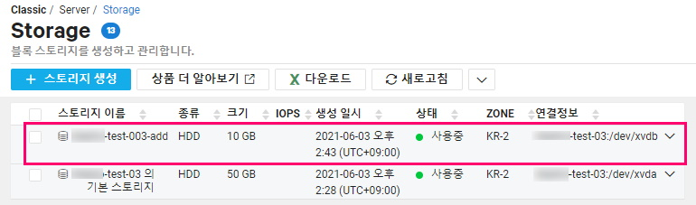
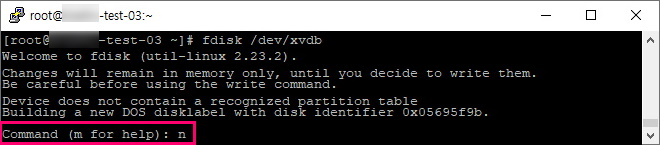
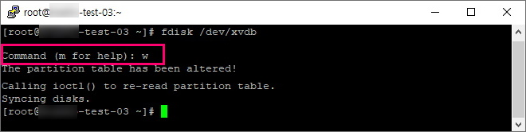
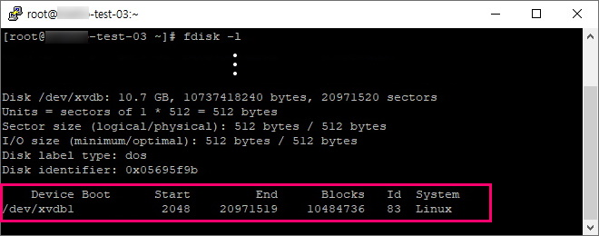
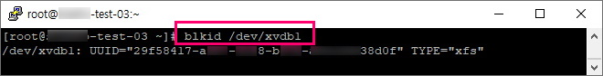
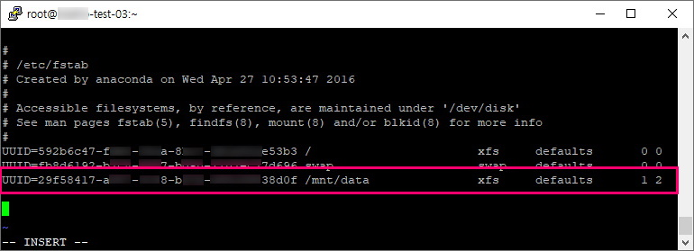

1. Micro 타입 서버에서 사용할 수 없는 서비스
네이버 클라우드 Micro 타입 서버에서 사용할 수 없는 서비스
써드아이시스템이 네이버 클라우드 프리미엄 파트너사로 활동하면서 보유하게 된 네이버 클라우드와 관련된 여러 기술 노하우들을 많은 분들께 공유하려고 합니다.
네이버 클라우드에서 리눅스 서버에 디스크를 추가하는 것은 스토리지 즉, Block Storage를 생성해서 서버에 연결하는 작업이 필요합니다.
~# fdisk -l
~# fdisk /dev/xvdb
~# mkfs.xfs /dev/xvdb1
- CentOS 5.x: mkfs.ext3 /dev/xvdb1
- CentOS 6.x: mkfs.ext4 /dev/xvdb1
- CentOS 7.x: mkfs.xfs /dev/xvdb1
- Ubuntu : mkfs.ext4 /dev/xvdb1
~# mkdir /mnt/data
~# mount /dev/xvdb1 /mnt/data
~# df -k
~# vi /etc/fstab
### =============================
UUID=1fd5s61f5d-*** 중략 ***-f84ew13 /mnt/data xfs defaults 1 2
# 또는
/dev/xvdb1 /mnt/data ext4 defaults 1 2
### =============================
...
우선은 네이버 클라우드 콘솔 [Server] - [Server]에서 해당 서버를 선택하고
[서버 관리 및 설정 변경] - [스토리지 생성]을 선택하거나
[Server] - [Storage]에서 [스토리지 생성]을 클릭합니다.


다음으로 [스토리지 생성] 화면에서 스토리지 종류, 이름, 적용서버, 크기 (최소 10GB, 최대 2000GB) 등을 선택하고 [추가] 버튼을 클릭합니다.

앞에서 설정한 스토리지 정보를 다시 살펴보고 이상이 없으면 [확인] 버튼을 클릭합니다.

추가된 스토리지는 [Server] - [Server] 리스트에서 해당 서버를 클릭해 상세정보에서 확인하거나 [Server] - [Storage] 리스트에서 연결정보까지 포함해서 확인할 수 있습니다.


네이버 클라우드 콘솔에서 할당한 스토리지를 확인하기 위해 putty를 실행해 서버에 접속합니다.
이후 과정은 모두 서버에 접속한 상태에서 진행하게 됩니다.
fdisk -l 명령어를 실행해보면 아래 화면처럼 /dev/xvdb 디스크가 할당된 것을 확인할 수 있습니다.
~# fdisk -l

다음 명령어를 입력해 할당된 디스크에 파티션을 생성합니다.
파티션 설정에는 기본인 MBR 방식과 2TB 이상의 디스크를 인식하기 위해 사용하는 GPT 방식이 있는데, 네이버 클라우드는 최대 2,000GB까지만 지원하므로 여기서는 기본방식인 MBR을 사용하겠습니다.
~# fdisk /dev/xvdb
파티션을 생성할 때는 여러 단계의 옵션이 있습니다. 일반적으로는 아래와 같은 단계로 진행하면 됩니다.




마지막으로 fdisk -l 명령어로 생성된 파티션을 다시 확인합니다.
디스크가 /dev/xvdb1 장치로 인식된 것을 확인할 수 있습니다.

다음으로 파티션이 생성된 디스크를 포맷하면 되는데, OS별로 명령어가 다르므로 확인 후에 실행해야 합니다.
여기서는 CentOS 7.x 기준으로 mkfs.xfs 명령어를 사용했습니다.
~# mkfs.xfs /dev/xvdb1
- CentOS 5.x: mkfs.ext3 /dev/xvdb1
- CentOS 6.x: mkfs.ext4 /dev/xvdb1
- CentOS 7.x: mkfs.xfs /dev/xvdb1
- Ubuntu : mkfs.ext4 /dev/xvdb1
다음으로 디스크를 마운트할 포인트 즉, 디렉토리를 원하는 이름으로 생성하고 마운트를 합니다.
아래에 있는 마운트 경로 (/mnt/data)는 예시입니다. 원하는 경로를 직접 설정하시면 됩니다.
~# mkdir /mnt/data
~# mount /dev/xvdb1 /mnt/data

마운트된 내역을 확인합니다.
~# df -k

마운트 정보는 설정에 저장하지 않으면 서버가 리부팅될 때 사라지기 때문에 fstab에 저장합니다.
마운트 정보를 등록할 때 장치명을 사용하는 방법과 장치의 UUID를 사용하는 방법이 있는데, 경우에 따라서는 장치명이 변경될 수도 있어, 이를 대비해 가능하면 UUID로 등록합니다.
UUID를 확인하려면 blkid 명령어를 사용합니다.
여기서 확인한 UUID를 별도로 복사해두었다가 fstab에 입력하게 됩니다.
~# blkid /dev/xvdb1

vi로 /etc/fstab 파일을 열면 다음과 같습니다.
서버 생성과 함께 장착된 기본 디스크도 UUID로 입력된 것을 확인할 수 있습니다.
~# vi /etc/fstab

앞에서 확인하고 복사해둔 추가 디스크의 UUID와 기타 정보를 입력합니다.
입력을 완료한 후 fstab 파일을 저장하고 빠져 나옵니다.
(fstab에 입력할때 사용하는 디스크 정보 옵션에 대한 정리는 아래에서 다시 확인할 수 있습니다.)
### /etc/fstab
UUID=29f58417-*** 중략 ***38d0f /mnt/data xfs defaults 1 2
# 또는
/dev/xvdb1 /mnt/data ext4 defaults 1 2

/etc/fstab은 부팅 단계에서 마운트되어야 할 볼륨 정보들이 저장되는 곳입니다.
(OS 이미지에 따라 파일 시스템이 다르기 때문에 주의해야 합니다.)
파일의 각 항목이 의미하는 바는 아래와 같으며 각 항목은 Tab 또는 Space Bar로 구분합니다.
(장치명) (마운트 포인트) (파일시스템 종류) (옵션) (dump 설정) (fsck 설정)
장치명: 장치명은 장치의 UUID를 사용하거나 /dev/xvdb1와 같은 장치이름을 사용합니다.
마운트 포인트: 볼륨을 마운트하고자 하는 위치입니다. 예시에서는 /mnt/data 디렉토리에 마운트했습니다.
파일시스템 종류: OS별로 기본 파일시스템이 다르므로 알맞게 입력합니다.
옵션: 예시에서는 default 옵션을 사용하였으며, 해당 옵션에는 rw, nouser, auto, exec, suid 속성이 포함됩니다.
각 속성의 내용은 다음과 같습니다. (필요한 옵션만 사용할 시, 각 옵션을 쉼표(,)로 구분하여 작성해주시면 됩니다.)
dump 설정: dump 명령으로 백업을 할 것인지에 대한 설정
fsck 설정: 부팅시에 fsck 명령으로 파일시스템에 대한 무결성 검사를 할 것인지에 대한 설정
https://guide.ncloud-docs.com/docs/compute-compute-4-1-v2.html
문서 최종 수정일 : 2021-06-04
네이버 클라우드 Server 관련 문서들입니다.
네이버 클라우드 Micro 타입 서버에서 사용할 수 없는 서비스
네이버 클라우드 서버 스펙 변경
네이버 클라우드 서버 정지 시 요금할인 횟수와 기한 등을 대한 안내입니다
네이버 클라우드 Auto Scaling 서비스 제한사항
네이버 클라우드 스토리지 추가 생성 기본 가이드
네이버 클라우드 ACG(Access Control Group) 가이드
네이버 클라우드 Linux 스토리지(디스크) 추가 상세 가이드
네이버 클라우드 백업 서비스 가이드와 신청 절차
네이버 클라우드 서버 접속 가이드 - 공인IP 없을 때
네이버 클라우드 서버 접속 가이드 - 공인IP 있을 때
네이버 클라우드 VPC 환경에서 서버 생성
네이버 클라우드 AutoScaling 그룹 이벤트 설정하는 방법
네이버 클라우드 Cloud Functions Action을 .Net (C#)을 사용하여 윈도우 명령프롬프트(cmd)에서 만드는 방법
네이버 클라우드 Cloud Functions Action을 .Net (C#)을 사용하여 Visual Studio에서 만드는 방법
네이버 클라우드 Cloud Functions에서 PHPMailer를 사용하여 gmail을 통해 SMTP로 메일 발송하는 방법
네이버 클라우드 리눅스 서버에 SSH로 접속할 때 필요한 보안 설정입니다.
네이버 클라우드 Classic 환경에서 서버 이미지를 다른 계정에 공유하는 방법을 소개합니다.
네이버 클라우드 Classic 환경 Windows 서버 이미지를 VPC 환경으로 복제하는 방법을 소개합니다.
네이버 클라우드 리눅스 서버의 Block Storage를 LVM으로 구성하는 방법입니다
네이버 클라우드 Kubernetes Service 클러스터 생성 및 제어 가이드입니다
네이버 클라우드 Classic 환경에서 AutoScaling 설정하는 방법입니다.
네이버 클라우드 서버 모니터링 서비스 Monitoring 설정 가이드입니다
네이버 클라우드 모니터링 서비스 Cloud Insight 설정 가이드입니다
네이버 클라우드 Classic 환경 vs VPC 환경 비교 가이드입니다
네이버 클라우드 Secure Zone이나 Private Network 환경에서 Repository를 변경해 리눅스 패키지 설치하는 방법입니다.
네이버 클라우드 서비스에서 X-Forwarded-For를 이용해 Proxy, Load Balancer 환경에서 Client IP를 Apache access_log에 기록하는 방법입니다
네이버 클라우드 CentOS에서 NginX 설치, 설정하는 방법입니다